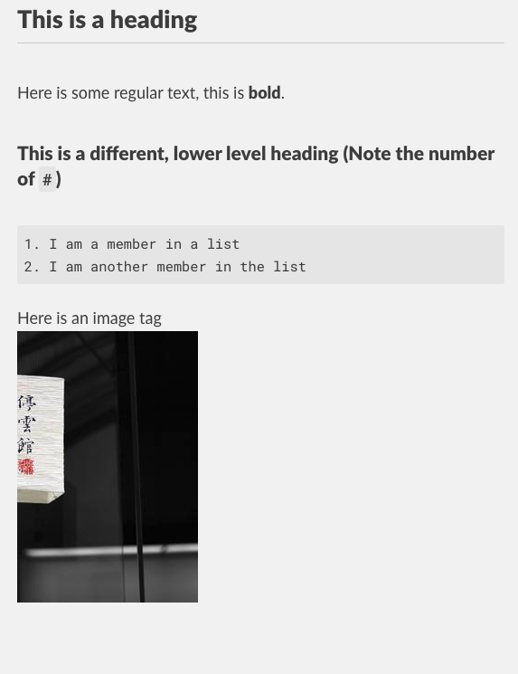
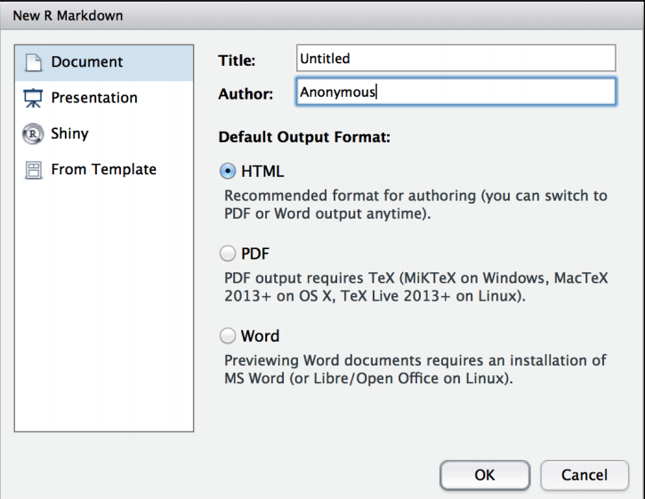

1 R and RMarkdown
1.1 About this chapter
- Questions:
- How do I write a reproducible analysis document in R with RStudio?
- Objectives:
- Learn markdown basics
- Mix markdown and R with Rmarkdown
- Keypoints:
- RMarkdown documents are excellent tools for creating readable, attractive and dynamic reproducible literate programming documents.
1.2 Markdown
The process of adding annotations, like corrections or notes and comments to a physical or digital document is sometimes called ’marking it up. In processing digital documents, a language that adds tags to text to format them is called a markup language. Web pages are all written in a markup language called HTML (hypertext markup language) and it puts tags around elements to format them. Here for example is the markup for making text bold.
I am regular text. But <b>I am bold!</b>and when you put that test through a rendering program like a web browser, it shows up like this:
I am regular text. But I am bold!
As you can see the bits in the <b></b> are formatted as per the tags surrounding them (the <b><\b> tags mean bold). Markdown performs a similar job, it is a lightweight markup language (hence mark-down), that can do a lot of formatting, and unlike HTML still looks readable in raw text without rendering it. It is a simple base format and can easily be converted into many formats.
1.3 R Markdown
R Markdown is an extension of markdown with R mixed in. The markdown syntax is extended using special blocks that contain R code. When it comes to rendering time, the R is run and the results pushed into the rendered document. By mixing these together we get a tool which we can use to get a literate programmed document that can fulfil all our responsibilities.

The R code block we mix in with our regular markdown is structured with ``` (backticks, not quotes) and {r}, in practice a block looks like this
```{r}
print("Hello, World!")
```
Any R code can go in the blocks, and the program remembers state between blocks so that stuff you do in earlier blocks is remembered in later ones.
1.3.1 Using R Markdown in RStudio
RStudio provides a lot of tools for creating RMarkdown documents easily. To get a basic template document you can use the menu’s File -> New File -> R Markdown. On doing this you see a dialogue box, usually you want to set the options as in the figure below (you can put your name and a title in the relevant boxes )

When you do this you get a new draft document.
For you to do
Using RStudio, create a new RMarkdown document. Read it and compare it with what goes below.
1.3.1.1 Header Information
The first bit of the draft document is a bit of YAML markup that captures some information about the document. You don’t need to change anything here if you don’t want to, though it can be useful to use the information at this link to set the date automatically Dates in RMarkdown
---
title: "My Document"
author: "Dan MacLean"
date: "20/04/2021"
output: html_document
---1.3.1.2 Setup Block
The next part is the automatically created set up block
```{r setup, include=FALSE}
knitr::opts_chunk$set(echo = TRUE)
```
This is a standard R block with some options set. The first bit ````{r setup,} is the standard block start, but this one is named setup. You don’t need to name each block, but it can be helpful when bugs start to appear. The next bit include=FALSE is an option that tells the RMarkdown renderer not to include the code or it’s output in the final document, this is because this is just setup code that we don’t want messing up our nice output. Then we have the code that this block runs knitr::opts_chunk$set(echo = TRUE) which set up some formatting options. You can use this block for any bits of setup code that you don’t want in the rest of your document.
1.3.1.3 Markdown and R blocks
The other blocks are the document’s standard code and text blocks. Read them then perform this task
For you to do
Using RStudio, render the document using the Knit button at the top of the editor pane.
Note how the code and results, including plots are mixed in the resulting document.
Make some text edits and change the plot titles, then re-knit the document.
1.3.2 Conclusion
This all there really is to RMarkdown documents, they are a very easy to use tool for keeping your analyses readable and reproducible. Inspect the cheat sheet a little further for tips on what more you can do in RMarkdown, RStudio RMarkdown Cheat Sheet.
Roundup
RMarkdown documents are excellent tools for creating readable, attractive and dynamic reproducible literate programming documents.